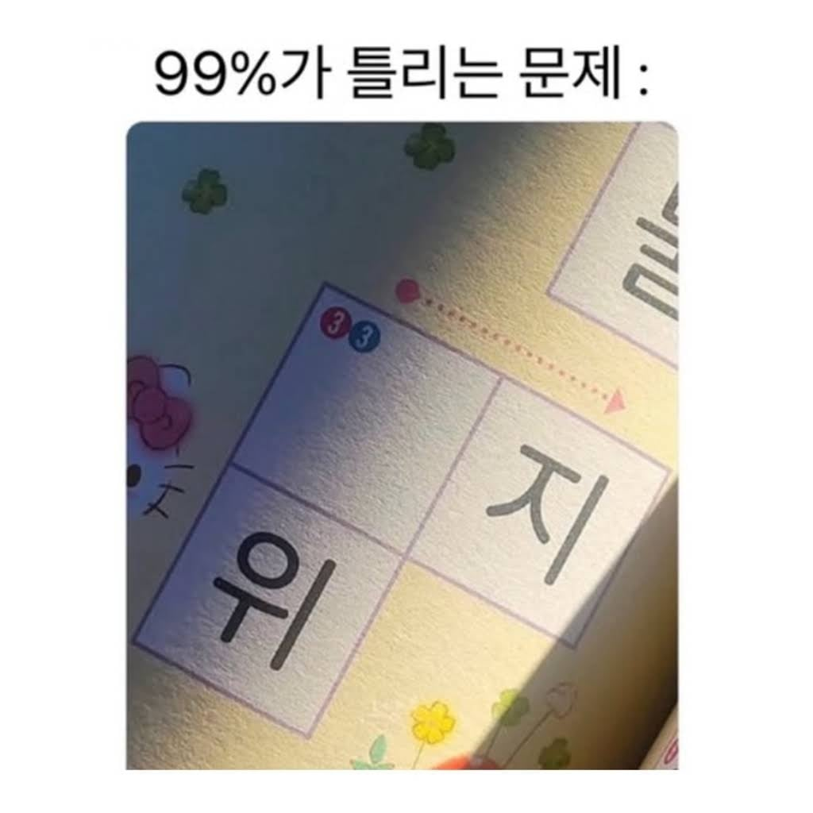

자지

자지
보통 이런 미취학아동 도서류는 가나다라부터 쓰게 만드는 편인데
애들한테 사지, 사위, 방지, 방위, 대지, 대위, 중지, 중위를 가르치진 않을거 같음
위의 글자도 물로 보이는 걸 봐선 위의 빈칸은 '나', '사'가 적합해보이는데 애한테 사물.. 을 가르칠지 모르겠네
만일 사물을 가르친다면 '바', 사물이 아니라 나물이라면 '가'일 가능성이 클듯
그러니까 바위 가위 둘 다 적절한데
가위라고 단정짓잖아 쟤는
윗댓글처럼 유아용은 저럴 때 가나다 순이야
저게 첫 문제인지 뒷 문제인지 어떻게 아냐고 병신아
문제 번호도 3번인데
대가리 안 씀?
저기 위에 번호랑은 상관 없이 저렇게 독립된 칸으로 존재 할때는 가나다 순으로 단어를 배치해 유아용이라
다른 칸이랑 연결 되어있다면 경우의 수가 많아지는데 독립된 칸이라 가나다순이라서 가 라고
거
보
니애미


고
데이비드 보위
스타맨~
오찡찡
나
니
현지?
가지 가위 중지 중위
들어갈수있는게 많은디?..
저하 보위에 오르서야 하옵니다
스타~~~맨~~~~

가지, 가위
사지, 사위
자지, 자위
타지, 타위(임금이 직접 나가서 하는 사냥)
하지, 하위
아 돌림만 해도 이렇게 많이 나오는데...
보위가 뭐지..
박지
위
지지 지위
빠지
빠위
(바사방대중...)도 된다니까